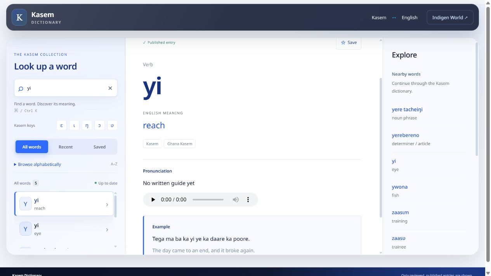

A recording can sound clear and still belong to a different meaning. The third Kasem listening review brought that distinction into focus: several words share a spelling but need different pronunciations.
The latest dictionary update adds 26 approved AI-generated recordings across 25 entries. It also corrects meanings and records forms supplied in the listening notes. Across the three listening rounds, 68 dictionary entries now have reviewed audio.

The approved kuri recording belongs to “choose,” tega to “dead,” and ŋwe to “pay.” Those recordings are attached to separate entries; the existing “bottom,” “earth” and “live” entries still need suitable audio.
The review also separates bwoŋi for “called” from the command “call,” yi for “reach” from “eye,” and su for “full” from “shake.” Each meaning has its own approved recording. The reviewer explicitly confirmed that woli can use the same pronunciation for “added” and “help.”
Jaana now means “flying,” while jaane is “to fly / fly.” Fɔge means “plaster”; fɔŋe has been added for “carefully.” Jaane and fɔŋe do not yet have approved recordings.
The dictionary also stores yia as the past form of “reach” and the plural of “eye,” and suga as the past form of “shake.” These are text forms supplied in the review. Audio has not been copied onto them.
Open the Kasem Dictionary, search for a word, check its English meaning and dialect label, then press play. Searching “yi,” for example, brings up separate entries for “reach” and “eye.” This update helps learners connect a recording with the meaning they intend.
These recordings are generated with Google Gemini and approved individually through the owner’s listening review. They are labelled as AI-generated. That review does not certify every dialect or every possible use of a word.
Unapproved recordings remain out of the dictionary. The possible additional meaning “proverbs” for memaŋa has been sent to the review queue and is not published. Notes about the final-vowel tones in laŋa and beera have been kept for another recording attempt, without changing their written spellings.
The dictionary data is live on the existing website. No new app download is needed to use the website recordings. The main player presents one take per entry; same-meaning alternates remain stored, and device-specific display of text forms may vary.